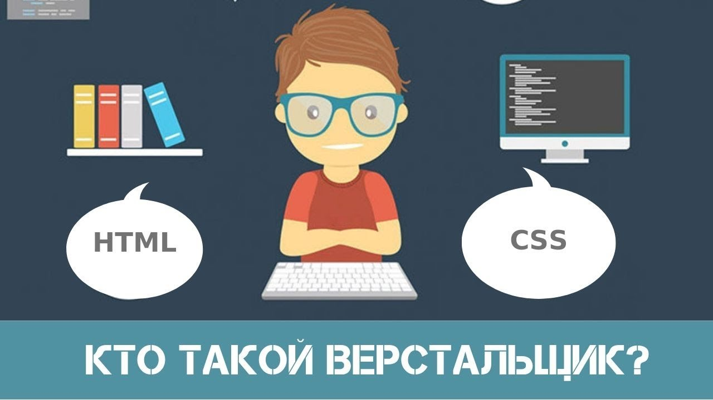

Обычно над созданием сайта работает группа специалистов: маркетологи, разработчики, дизайнеры. Сначала продумывают наполнение и визуальную часть — получается макет в виде картинки. Чтобы можно было нажимать на кнопки, скроллить страницу и заполнять формы, макет нужно перевести в код. Этим и занимается верстальщик.
По сути, верстальщик — это специалист, который задает внешний вид сайта на языках программирования. Он превращает макеты дизайнеров в интерактивные страницы. Его задача — сделать так, чтобы сайт правильно отображался в разных браузерах, на разных телефонах и операционных системах.
Верстальщики сайтов работают в студиях веб-дизайна, маркетинговых агентствах, интернет-проектах, частных компаниях. Именно о них и пойдет речь в статье.
В обязанности верстальщика входит:
Основная работа верстальщика — переводить готовые макеты в понятную для браузера форму с помощью HTML и CSS.
HTML — язык гипертекстовой разметки. Он отвечает за структуру страницы, с его помощью можно размещать текст, картинки, видео и таблицы.
CSS язык декодирования и описания внешнего вида страницы. Он нужен, чтобы задать стили, например цвет, размер и шрифт.